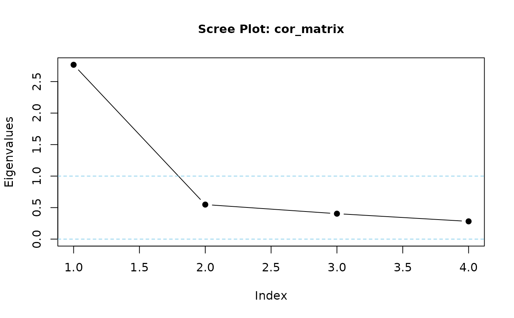
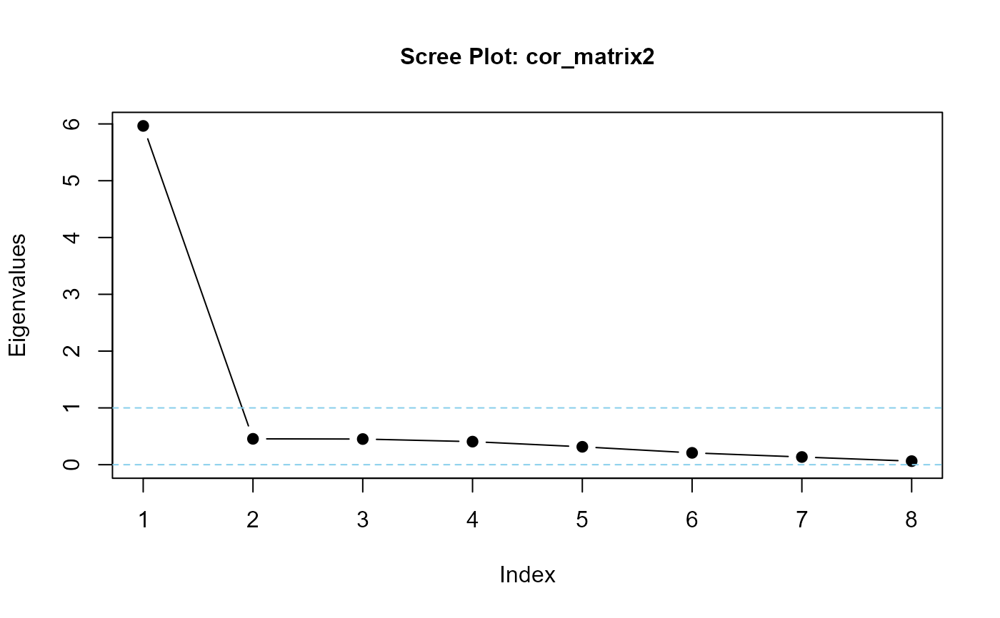
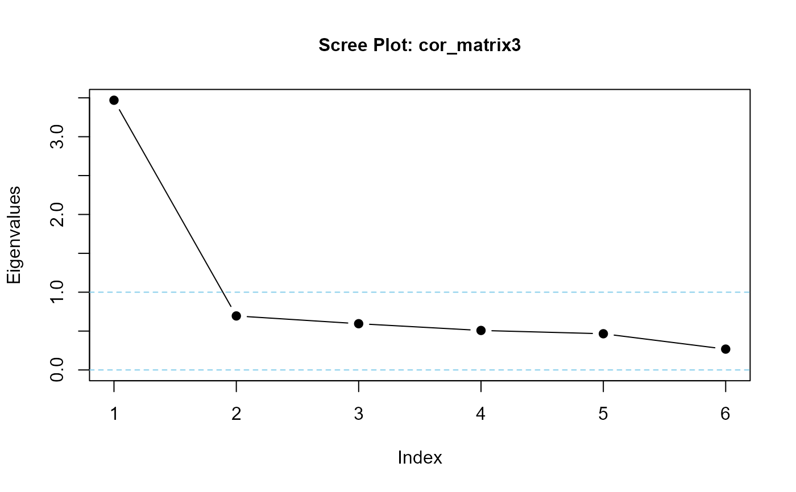

Generate a Positive-Definite Correlation Matrix for a target Cronbach's alpha.
Constructs a correlation matrix with a specified number of items and target Cronbach's alpha using a constructive one-factor model.
Such a correlation matrix can be applied to the makeScales()
function to generate synthetic data with the predefined alpha.
The algorithm directly builds a positive-definite correlation matrix by solving for item loadings that reproduce the desired average inter-item correlation implied by alpha. Unlike the earlier swap-based approach of this function, this method guarantees positive definiteness without post-hoc repair.
Usage
makeCorrAlpha(
items,
alpha,
variance = 0.5,
precision = 0,
sort_cors = FALSE,
diagnostics = FALSE
)Arguments
- items
Integer. Number of items (>= 2).
- alpha
Numeric. Target Cronbach's alpha.
- variance
Numeric. Controls heterogeneity of item loadings. Larger values produce greater spread among inter-item correlations. Internally moderated if necessary to maintain feasibility.
- precision
Integer (0–3). Controls decimal-level reproducibility of alpha.
0: exact deterministic alpha.1: approximately one-decimal accuracy.2: approximately two-decimal accuracy.3: approximately three-decimal accuracy.
Internally, alpha is sampled with standard deviation \(0.5 \times 10^{-precision}\).
- sort_cors
Deprecated. Retained for backward compatibility. Has no effect under the constructive generator.
- diagnostics
Logical. If
TRUE, returns a list containing the matrix and diagnostic information.
Value
If diagnostics = FALSE, a positive-definite correlation matrix.
If diagnostics = TRUE, a list containing:
R: the correlation matrixdiagnostics: list including achieved alpha, minimum eigenvalue, and internal variance used
If 'diagnostics = FALSE', a k x k correlation matrix. If 'diagnostics = TRUE', a list with components:
- R
k x k correlation matrix
- diagnostics
list of summary statistics
Details
The function computes the average inter-item correlation implied by the requested alpha and solves for a one-factor loading structure that reproduces this value. A small adaptive reduction in dispersion may be applied when necessary to ensure a valid positive-definite solution.
The constructive generator assumes a single common factor structure, consistent with typical psychometric scale construction.
When precision > 0, the target alpha is sampled around the
requested value to approximate decimal-level reporting accuracy.
Examples
# define parameters
items <- 4
alpha <- 0.85
variance <- 0.5
# apply function
set.seed(42)
cor_matrix <- makeCorrAlpha(
items = items,
alpha = alpha,
variance = variance
)
#> Achieved alpha = 0.85
# test function output
print(cor_matrix)
#> item01 item02 item03 item04
#> item01 1.0000000 0.5558616 0.6881232 0.7265738
#> item02 0.5558616 1.0000000 0.4598536 0.4855490
#> item03 0.6881232 0.4598536 1.0000000 0.6010805
#> item04 0.7265738 0.4855490 0.6010805 1.0000000
alpha(cor_matrix)
#> [1] 0.8499825
eigenvalues(cor_matrix, 1)

#> cor_matrix is positive-definite
#>
#> [1] 2.7710735 0.5806680 0.4006440 0.2476146
# higher alpha, more items
cor_matrix2 <- makeCorrAlpha(
items = 8,
alpha = 0.95
)
#> Warning: Requested variance was reduced internally to ensure feasibility.
#> Achieved alpha = 0.95
# test output
cor_matrix2 |> round(2)
#> item01 item02 item03 item04 item05 item06 item07 item08
#> item01 1.00 0.68 0.79 0.82 0.85 0.68 0.80 0.57
#> item02 0.68 1.00 0.68 0.70 0.73 0.59 0.68 0.49
#> item03 0.79 0.68 1.00 0.82 0.85 0.68 0.80 0.57
#> item04 0.82 0.70 0.82 1.00 0.88 0.70 0.82 0.59
#> item05 0.85 0.73 0.85 0.88 1.00 0.73 0.86 0.61
#> item06 0.68 0.59 0.68 0.70 0.73 1.00 0.69 0.49
#> item07 0.80 0.68 0.80 0.82 0.86 0.69 1.00 0.57
#> item08 0.57 0.49 0.57 0.59 0.61 0.49 0.57 1.00
alpha(cor_matrix2) |> round(3)
#> [1] 0.95
eigenvalues(cor_matrix2, 1) |> round(3)

#> cor_matrix2 is positive-definite
#>
#> [1] 5.973 0.568 0.415 0.357 0.209 0.202 0.170 0.106
# large random variation around alpha
set.seed(42)
cor_matrix3 <- makeCorrAlpha(
items = 6,
alpha = 0.85,
precision = 3
)
#> Achieved alpha = 0.851
# test output
cor_matrix3 |> round(2)
#> item01 item02 item03 item04 item05 item06
#> item01 1.00 0.37 0.40 0.38 0.33 0.48
#> item02 0.37 1.00 0.52 0.49 0.43 0.63
#> item03 0.40 0.52 1.00 0.53 0.46 0.67
#> item04 0.38 0.49 0.53 1.00 0.43 0.64
#> item05 0.33 0.43 0.46 0.43 1.00 0.55
#> item06 0.48 0.63 0.67 0.64 0.55 1.00
alpha(cor_matrix3) |> round(3)
#> [1] 0.851
eigenvalues(cor_matrix3, 1) |> round(3)

#> cor_matrix3 is positive-definite
#>
#> [1] 3.469 0.695 0.595 0.508 0.466 0.268
# with diagnostics
cor_matrix4 <- makeCorrAlpha(
items = 4,
alpha = 0.80,
diagnostics = TRUE
)
#> Achieved alpha = 0.8
# test output
cor_matrix4
#> $R
#> item01 item02 item03 item04
#> item01 1.0000000 0.5172728 0.3670963 0.4657822
#> item02 0.5172728 1.0000000 0.5205415 0.6604779
#> item03 0.3670963 0.5205415 1.0000000 0.4687256
#> item04 0.4657822 0.6604779 0.4687256 1.0000000
#>
#> $diagnostics
#> $diagnostics$items
#> [1] 4
#>
#> $diagnostics$alpha_input
#> [1] 0.8
#>
#> $diagnostics$alpha_target_effective
#> [1] 0.8
#>
#> $diagnostics$alpha_achieved
#> [1] 0.7999889
#>
#> $diagnostics$average_r
#> [1] 0.4999827
#>
#> $diagnostics$min_eigenvalue
#> [1] 0.3307719
#>
#> $diagnostics$variance_input
#> [1] 0.5
#>
#> $diagnostics$internal_variance_used
#> [1] 0.125
#>
#> $diagnostics$precision
#> [1] 0
#>
#>